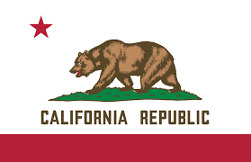

VS
VS


Map Of The Californian Civil War

Map Of The California If the APLA Won The Californian Civil War
Overview
The Californian Civil War represents a brutal three-way conflict that erupted within the 2nd California Republic Around A Few Mounths Later After The 2nd American Civil War Started. What began as internal political tensions quickly escalated into full-scale warfare between the legitimate government and two major insurgent factions. It has a 50/50 chance of happening.
üèõÔ∏è The Conflict
A complex three-way war between the California Republic government, pro-American insurgents, and criminal organizations seeking territorial control.
üó∫Ô∏è Geographic Scope
Fighting spans the entire state from the Oregon border to Mexico, with each faction controlling distinct territories and strategic locations.
⚡ Causes
Political disagreement over independence, economic collapse, power vacuum in law enforcement, and ethnic tensions over California's future.
üåç International Impact
Affects Pacific trade, refugee flows to Mexico, and complicates relationships between California and other American successor states.
Nature of the Conflict
Unlike the broader Second American Civil War between successor states, the Californian Civil War is an internal struggle for control of the world's 5th largest economy. The conflict features:
- Urban warfare in major cities like Los Angeles and San Francisco
- Control battles over ports, airports, and economic infrastructure
- Guerrilla campaigns in rural and mountainous areas
- Ethnic and ideological divisions within communities
- Criminal organizations exploiting the chaos for territorial expansion
Major Factions
üèõÔ∏è California Republic Government
Leader: Governor Gavin Newsom
Territory: Central California, Bay Area, parts of Southern California
Strength: ~180,000 fighters (National Guard, State Police, militias)
Ideology & Goals
- Legitimate government of independent California
- Progressive politics and environmental protection
- Maintaining California's tech economy and international trade
- Crushing all insurgent movements to restore order
Military Capabilities
- Former California National Guard units
- State police and highway patrol forces
- Volunteer militia and citizen defense forces
- Control of major ports and airports
Controlled Areas
- San Francisco Bay Area (government stronghold)
- Sacramento (capital and administrative center)
- Central Valley agricultural regions
- Parts of coastal Southern California
üá∫üá∏ American Liberation Army (ALA)
Leader: General Marcus Thompson (former US Army)
Territory: Northern California, rural areas
Strength: ~85,000 fighters (veterans, militias, volunteers)
Ideology & Goals
- Reunification with United States (Union of America)
- Opposition to California independence as illegal secession
- Conservative values and traditional American identity
- Overthrowing the "illegitimate" California Republic
Military Capabilities
- Military veterans with combat experience
- Well-organized militia groups
- Support from rural law enforcement
- Guerrilla warfare and insurgency tactics
Controlled Areas
- Far Northern California (Redding, Chico region)
- Rural counties in the Sierra Nevada
- Parts of the Central Valley
- Mountain communities and forest areas
üíÄ Hell's Angels Territory
Leader: "Iron Mike" Kozlowski (Hell's Angels President)
Territory: Greater Los Angeles Area, portions of Southern California
Strength: ~45,000 fighters (bikers, gangs, mercenaries)
Ideology & Goals
- Criminal organization exploiting power vacuum
- Establishing independent territory under biker rule
- Control of drug trade and illegal activities
- Opposition to all forms of government authority
Military Capabilities
- Motorcycle gangs and affiliated criminal groups
- Heavy weapons acquired through black market
- Urban warfare and intimidation tactics
- Alliances with other criminal organizations
Controlled Areas
- Large portions of Los Angeles County
- Parts of Orange and Riverside Counties
- Desert regions in Southern California
- Key smuggling routes to Mexico
Minor Factions & Local Groups
Tribal Nations
Various Native American tribes attempting to maintain neutrality while protecting reservation lands from all factions.
Border Militias
Independent groups along the Mexican border, some cooperating with Hell's Angels, others supporting the Republic.
Local Warlords
Small-scale leaders who have carved out tiny territories, often shifting alliances based on circumstances.
Refugee Communities
Displaced populations forming their own defense groups, generally seeking protection rather than territorial control.
Timeline of the Conflict
Pre-War Period (December 2025 - February 2026)
California Independence
2nd California Republic declares independence from the United States, triggering immediate internal divisions.
Californian Civil War begins.
Political factions and criminal groups mobilize, leading to initial skirmishes in Northern and Southern California.
Impact & Consequences
Humanitarian Crisis
üë• Civilian Casualties
Deaths: ~150,000 estimated
Wounded: ~400,000 estimated
Missing: ~75,000 estimated
üè† Displacement
Internal Refugees: 5.2 million
International Refugees: 2.1 million
Destroyed Homes: ~800,000
üè• Healthcare Crisis
Medical system collapse in contested areas. Hospitals targeted by military operations. Disease outbreaks in refugee camps.
üéì Education Disruption
School system collapse affects 6+ million children. Universities closed or operating at limited capacity. Brain drain to other states.
Economic Devastation
Sector-Specific Impacts
üíª Technology Sector
Silicon Valley operations severely disrupted. Major tech companies relocated headquarters. Innovation ecosystem collapsed.
üé¨ Entertainment Industry
Hollywood under criminal control. Film and TV production moved to other states. Creative talent exodus.
üåæ Agriculture
Central Valley devastated by fighting. Food production down 70%. National impact on produce prices.
üö¢ Trade & Logistics
Port operations disrupted. Supply chains broken. International shipping rerouted to other states.
Environmental Consequences
- Infrastructure Damage: Destroyed water treatment plants causing pollution
- Oil Spills: Damaged refineries and pipelines contaminating coastlines
- Forest Fires: Military operations triggering massive wildfires
- Wildlife Displacement: Ecosystems disrupted by warfare and refugee movements
Regional & International Effects
üá∫üá∏ Other US States
Massive refugee influx straining resources. Economic disruption from lost California markets. Political tensions over intervention.
üá≤üáΩ Mexico
Border security crisis. 2+ million California refugees. Drug cartel expansion into lawless areas.
üåè Pacific Trade
Global supply chain disruption. Asian trade routes affected. International shipping costs increased significantly.
üåê Technology Impact
Global tech sector affected by Silicon Valley collapse. Innovation slowdown. Price increases for tech products worldwide.
Long-term Consequences
The Californian Civil War has fundamentally altered the state and region:
- Political Fragmentation: Likely permanent division of California into multiple entities
- Economic Decline: California's status as economic powerhouse severely damaged
- Demographic Changes: Massive population shifts affecting neighboring states
- International Relations: US influence in Pacific region significantly weakened
- Criminal Expansion: Organized crime establishing permanent territorial control